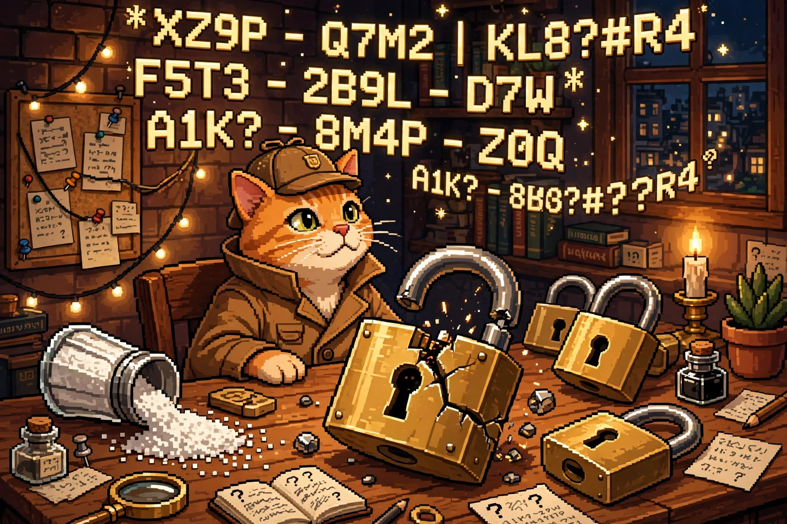

How Passwords Get Cracked: Hashes, Salt, and Why 'P@ssw0rd!' Fails

The cat detective cracked the padlock — but only because the lock was built from a guessable password and a stale recipe. Salt, slow hashing, and a password manager change the whole game.
Your password is never stored as your password
When you sign up for a site, a well-run service does not save your actual password. It runs it through a one-way recipe called a hash and stores the result — a fixed-length string of gibberish. When you log in, it hashes what you typed and checks whether the two strings match. The site never needs to know your password, and a thief who steals the database gets hashes, not passwords.
That's the good version. The catch is that hashes can be guessed backwards: take a candidate password, hash it the same way, and see if it matches. If it does, you've found the password — without ever asking the site. That is password cracking, and it happens entirely offline, at computer speed, with no login screen to slow it down.
Why 'P@ssw0rd!' fails in seconds
'P@ssw0rd!' looks strong to a human: capital letter, symbol, number, exclamation mark. To a cracker, it's one of the first guesses in the book, because it follows the most predictable human pattern in existence — a common word with the obvious substitutions (a → @, o → 0) and a bang on the end. Attackers don't guess randomly. They start with:
- Wordlists — millions of real passwords leaked in past breaches, plus dictionary words, names, sports teams, and years.
- Patterns — the substitutions and suffixes humans actually use: seasons, "123", "!", birth years.
- Your own data — passwords reused across sites, so one breach hands attackers a key that fits many doors.
Complexity rules ("must contain a symbol!") backfired for years: they pushed everyone toward the same predictable tricks. Length and unpredictability beat clever-looking symbols every time. A passphrase like "correct horse battery staple" — four random words — is far harder to guess than 'P@ssw0rd!', and far easier to remember.
The four ways passwords actually fall
1. Online guessing. Trying passwords against the live login page. This is the slowest route, because a decent identity provider — Microsoft Entra ID, Okta, or on-prem Active Directory — rate-limits attempts, locks accounts, and demands a second factor. That's why the LV 2 post on MFA matters so much: even a cracked password stops at the MFA prompt.
2. Credential stuffing. Taking username/password pairs from one breach and spraying them across other sites, betting you reused the password. No cracking involved — the password is already known. This is the single best argument for never reusing a password.
3. Offline cracking after a breach. The attacker steals a database of hashes and guesses at full speed on their own hardware, using tools like Hashcat — the same tool defenders use to audit their own password strength. No lockouts, no alarms, just math. Weak hashing makes this devastating; strong hashing makes it boring (see below).
4. Phishing. Skip the math entirely and just ask the human. A fake login page collects the real password. This is why MFA — especially phishing-resistant MFA like passkeys — is the backstop for everything else in this post.
Hashes, salt, and slow recipes
Three ideas decide whether a stolen hash database is a catastrophe or a shrug:
- The hash recipe matters. Old, fast recipes like MD5 and SHA-1 were designed for speed — great for checking files, terrible for passwords, because an attacker can try billions of guesses per second. Modern password recipes — bcrypt and Argon2 — are deliberately slow and memory-hungry, cutting an attacker from billions of guesses to thousands. Speed is the enemy here.
- Salt kills shortcuts. A salt is a random value mixed into each password before hashing, unique per user. Without salt, two users with the password "hunter2" have identical hashes, and attackers can pre-compute answers once — a giant lookup book called a rainbow table — and crack every matching hash instantly. With salt, every password must be guessed individually, and the lookup book is useless. (That's the salt shaker in the picture.)
- Pepper is salt's secret cousin. A pepper is an extra secret value stored separately from the database — not per user, and not in the stolen data. If the database leaks but the pepper doesn't, the hashes alone are much harder to crack.
A password's strength is not how weird it looks — it's how many guesses an attacker needs, and how expensive each guess is. Long + unique + salted + slow-hashed wins. 'P@ssw0rd!' is short, reused everywhere, and the first guess in every wordlist.
Where the real tools catch it
A password attack never happens in isolation on a real team. Here's where each tool category fits in the workflow, from the first bad login to the ticket that fixes it:
- Identity provider (Entra ID / Okta / Active Directory) — the front door. It enforces MFA, conditional access, lockouts, and password policy, and logs every success and failure. Most online guessing dies here.
- EDR (CrowdStrike / SentinelOne) — the laptop and server watcher. It flags the techniques attackers use to steal hashes in the first place: poking at LSASS memory, running credential-dumping tools like Mimikatz, or accessing the SAM database. An EDR alert here means "someone is harvesting passwords on this machine," not just "a login failed."
- SIEM (Splunk / Microsoft Sentinel) — the correlation brain. It pulls the IdP logs, VPN logs, and EDR alerts together and spots patterns no single log shows: a burst of failed logins across many accounts (password spraying), a login from an impossible location right after a breach announcement, or a successful login using a password that appeared in a known breach.
- Firewall / VPN gateway (Palo Alto) — the perimeter witness. Its logs show where the login attempts are coming from and let the team block the offending IPs or countries at the edge, before the attempts even reach the identity provider.
- ITSM / ticketing (ServiceNow) — where the response becomes a task. A confirmed credential compromise opens a ticket: force a password reset, revoke sessions and tokens, require MFA re-registration, and notify the user. Without the ticket, the alert is just a message nobody acted on.
Notice the chain: the EDR sees the theft, the SIEM connects the dots, the firewall blocks the source, and ServiceNow makes a human do the reset. A password post that only talks about hashing misses the whole team sport.
What to actually do
- Use a password manager (1Password, Bitwarden, or your browser's built-in one) and let it generate a long, unique password for every site. You only remember one strong master password.
- Turn on MFA everywhere that offers it — and prefer passkeys or an authenticator app over SMS codes (see the LV 2 post on why SMS is the weak link).
- Check whether your credentials have leaked with Have I Been Pwned's email lookup — and if they have, change those passwords first, starting with your email account, since it resets everything else.
- Prefer passphrases for the few passwords you type by hand — four or five random words beat one "clever" word with symbols.
Try it yourself
Open your password manager's security report (most have one — look for "Watchtower" in 1Password or "Vault Health" in Bitwarden) and count how many passwords you reuse. Don't change them all tonight; change the top three that matter most: your email, your bank, and your password manager's own master password. That's the 20% of the work that removes 80% of the risk — and it's exactly the order a security team would triage it in ServiceNow.
Next in this series at Level 4: what is a firewall rule, really — allow, deny, and the rule order that quietly breaks everything. Same cat, bigger fence.